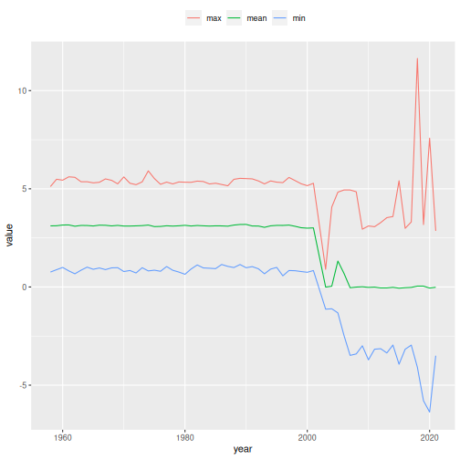

Introduction to Apache Arrow framework
Fernando Mayer, Niamh Cahill
Source:vignettes/intro-to-arrow.Rmd
intro-to-arrow.RmdThe Apache Arrow framework
The definition of the Apache Arrow framework is best described from their website:
Apache Arrow is a software development platform for building high performance applications that process and transport large data sets. It is designed to both improve the performance of analytical algorithms and the efficiency of moving data from one system or programming language to another.
A critical component of Apache Arrow is its in-memory columnar format, a standardized, language-agnostic specification for representing structured, table-like datasets in-memory. This data format has a rich data type system (included nested and user-defined data types) designed to support the needs of analytic database systems, data frame libraries, and more.
In other words, the Apache Arrow framework was designed to deal with large datsets (larger than memory), using in-memory analytics. This means that the computations made with “Arrow datasets” are extremaly efficient, resulting in very fast computations, otherwise infeasible with standard computations.
The Apache Arrow framework can be used in many different programming languages. However, in each of this languages, there are specific libraries to deal with it. In R, the arrow package is available to load and manipulate Arrow datasets. The manipulation of Arrow objects are made through dplyr verbs, which helps users to feel familiar with it. Not all dplyr verbs are availbale to work with Arrow datasets, but the vast majority of the most used ones are already “translated” to be used with Arrow. A list of such functions can be found in Functions available in Arrow dplyr queries. A general introduction of using dplyr verbs with Arrow can be seen in Data analysis with dplyr syntax.
Using Apache Arrow with geslaR
The geslaR package makes use of the Apache Arrow framework to deal with the GESLA dataset in R.
In this tutorial, we will use the download_gesla()
function, to download the full GESLA dataset, and show some basic data
manipulation with the arrow package and
dplyr verbs.
The first time you load the geslaR package, it will automatically load both the arrow and dplyr packages.
library(geslaR)
#> Loading required package: arrow
#>
#> Attaching package: 'arrow'
#> The following object is masked from 'package:utils':
#>
#> timestamp
#> Loading required package: dplyr
#>
#> Attaching package: 'dplyr'
#> The following objects are masked from 'package:stats':
#>
#> filter, lag
#> The following objects are masked from 'package:base':
#>
#> intersect, setdiff, setequal, unionTo download the full GESLA dataset, one can simply use
This will create a directory called gesla_dataset in the
current working directory (as defined by getwd()) and
download the full dataset locally. This download may take some time, as
it depends on internet connection, but it’s necessary only once. Note
that this full dataset will need at least 7GB of (hard drive) storage,
so make sure this is feasible. However, once downloaded, you will have
access to the full dataset, and you will only need to do this once.
You will notice that the full dataset is composed by 5119 Apache Parquet files, ending in
.parquet
## Number of downloaded files
length(list.files("gesla_dataset"))
#> [1] 61
## Check the first files
head(list.files("gesla_dataset"))
#> [1] "aranmore_island_leabgarrow-ara-irl-mi_c.parquet"
#> [2] "aranmore-ara-irl-cmems.parquet"
#> [3] "arklow_harbour_opw_station-ark-irl-mi_c.parquet"
#> [4] "arklowharbour-ark-irl-cmems.parquet"
#> [5] "ballycotton_harbour-bal-irl-mi_c.parquet"
#> [6] "ballycotton-bal-irl-cmems.parquet"These files are the same originally distributed in the GESLA dataset,
so that each one refers to a site from where the data comes from. To
load this full dataset in R, use the arrow::open_dataset()
function, specifying the location of the .parquet files.
Altough there are many files, this function recognizes them as a single
dataset, because they all have the same structure (or “Schema”).
## Open dataset
da <- open_dataset("gesla_dataset")
## Check the object
da
#> FileSystemDataset with 61 Parquet files
#> date_time: timestamp[us]
#> year: int64
#> month: int64
#> day: int64
#> hour: int64
#> country: string
#> site_name: string
#> lat: double
#> lon: double
#> sea_level: double
#> qc_flag: int64
#> use_flag: int64
#> file_name: string
#>
#> See $metadata for additional Schema metadata
## Verify class
class(da)
#> [1] "FileSystemDataset" "Dataset" "ArrowObject"
#> [4] "R6"Since this is an ArrowObject object, it will actually
not load the full dataset in memory (as it would if it was a standard R
object, such as a tibble or data.frame). Note
that some basic informations, such as dim() and
names() can be retrieved simply with
dim(da)
#> [1] 18189361 13
names(da)
#> [1] "date_time" "year" "month" "day" "hour" "country"
#> [7] "site_name" "lat" "lon" "sea_level" "qc_flag" "use_flag"
#> [13] "file_name"However, any other manipulation of the dataset must be made using dplyr verbs. For example, to count the number of observations by country, one could use
da |>
count(country)
#> FileSystemDataset (query)
#> country: string
#> n: int64
#>
#> See $.data for the source Arrow objectNote, however, that the output is just a query to the full dataset.
To explicitly return the calculation, you should use
dplyr::collect(), so the result is a standard
tibble
da |>
count(country) |>
collect()
#> # A tibble: 3 × 2
#> country n
#> <chr> <int>
#> 1 IRL 16975901
#> 2 ATA 1084526
#> 3 FRA 128934This is intentionally done so that you can manipulate, calculate, and
extract informations from the dataset, taking advantage of the Arrow
in-memory analytics framework. This way, the computations should be
faster, and the idea is that you just use dplyr::collect()
when the final result should be needed as an R object. For example, we
could calculate the mean sea level for Ireland per year, for the whole
dataset, as
da |>
filter(country == "IRL", use_flag == 1) |>
group_by(year) |>
summarise(mean = mean(sea_level)) |>
arrange(year) |>
collect()
#> # A tibble: 63 × 2
#> year mean
#> <int> <dbl>
#> 1 1958 3.11
#> 2 1959 3.12
#> 3 1960 3.16
#> 4 1961 3.16
#> 5 1962 3.09
#> 6 1963 3.13
#> 7 1964 3.13
#> 8 1965 3.11
#> 9 1966 3.15
#> 10 1967 3.14
#> # ℹ 53 more rowsAny other queries could be made, as long as the dplyr verbs uesd are supported by the arrow package. For example, we could ask for the minimum, mean, and maximum sea level values for Ireland per year
da |>
filter(country == "IRL", use_flag == 1) |>
group_by(year) |>
summarise(
min = min(sea_level),
mean = mean(sea_level),
max = max(sea_level)) |>
collect()
#> # A tibble: 63 × 4
#> year min mean max
#> <int> <dbl> <dbl> <dbl>
#> 1 2018 -4.09 0.0462 11.6
#> 2 2019 -5.80 0.0436 3.18
#> 3 2014 -2.96 -0.0175 3.59
#> 4 2015 -3.93 -0.0613 5.41
#> 5 2016 -3.17 -0.0370 2.99
#> 6 2017 -2.96 -0.0212 3.31
#> 7 2008 -3.41 -0.00481 4.85
#> 8 2009 -3.00 0.0108 2.94
#> 9 2010 -3.71 -0.0192 3.11
#> 10 2011 -3.17 -0.00690 3.07
#> # ℹ 53 more rowsThis same query could already be used to produce graphics with
ggplot2, for example. In this case, note that tha call
to dplyr::collect() is mandatory in advance to using
ggplot2 functions, as it will only accept standard R
objects (such as tibble or data.frame).
library(ggplot2)
da |>
filter(country == "IRL", use_flag == 1) |>
group_by(year) |>
summarise(
min = min(sea_level),
mean = mean(sea_level),
max = max(sea_level)) |>
collect() |>
tidyr::pivot_longer(cols = c(min, mean, max)) |>
ggplot(aes(x = year, y = value, colour = name)) +
geom_line() +
theme(legend.position = "top") +
labs(colour = "")